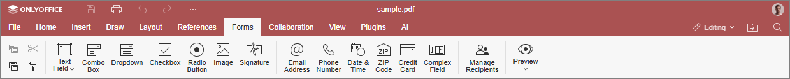
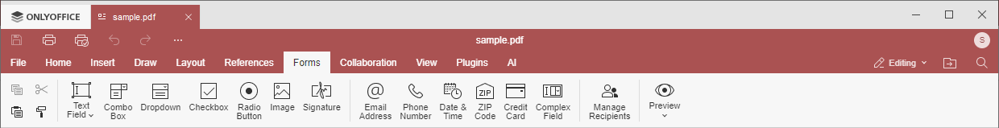

Kartica Obrasci
Kartica Obrasci omogućava kreiranje obrasca za popunjavanje kao što su ugovori, prijave ili ankete. Dodajte, formatirajte i konfigurišite tekstualna polja i polja obrasca da biste oblikovali obrazac za popunjavanje, bez obzira na njegovu složenost.
Odgovarajući prozor Online Uređivača dokumenata:

Odgovarajući prozor Desktop Uređivača dokumenata:

Pomoću ove kartice možete:
- ubaciti i izmeniti
- obrisati sva polja i podešavanja isticanja,
- navigirati kroz polja obrasca pomoću tastera Prethodno polje i Sledeće polje,
- pregledati kreirane obrasce u dokumentu,
- upravljati primaocima.